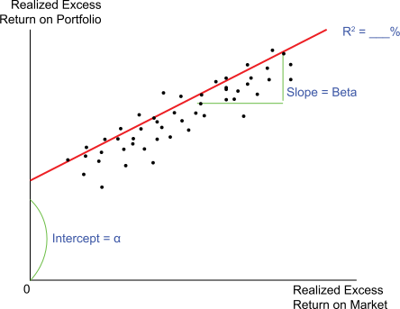

While the efficient market theory dictates that portfolio managers cannot achieve “excess” return, history has shown that, for given periods of time, some in fact do achieve excess return, while others underperform.
A key term used in asset allocation to account for the impact of the portfolio manager on performance is alpha (a). This term, whose basis is in CAPM theory, can be especially helpful as you seek to identify managers that have the ability to deliver true value-added returns over and above what would be expected based on the market returns and the risk exposure of the portfolio. In a basic sense, the alpha is a score that quantifies what many refer to as “manager impact”, or value- added, either positively or negatively, from the skills of the investment manager.
The chart below samples portfolio return observations over time and plots the portfolio’s excess return against the excess return of the market for the same period. After taking the samples, regression analysis is used to plot a line through the samples that represents the “average best fit regression” of the scattered plots. If the CAPM holds, the portfolio should have zero excess return when the market has zero excess return and the line should intercept the axis at zero. When that doesn’t happen, another factor has been introduced, which either caused excess return (causing the line to intercept above the horizontal axis) or it caused diminished return (causing the line to intercept below the horizontal axis).
Alpha is the magnitude of the distance from the horizontal axis to the point where the line intercepts the vertical axis. Generally speaking, alpha is used as a measure of the portfolio manager’s contribution to the performance of the portfolio.
Click each term below to learn more.
